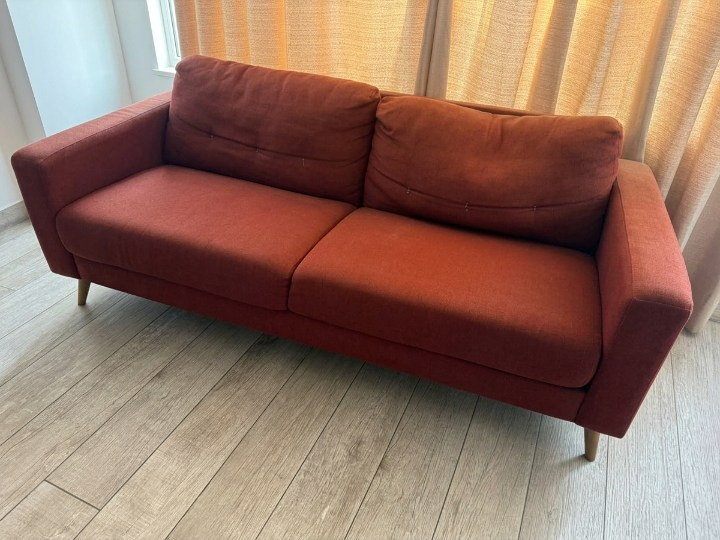
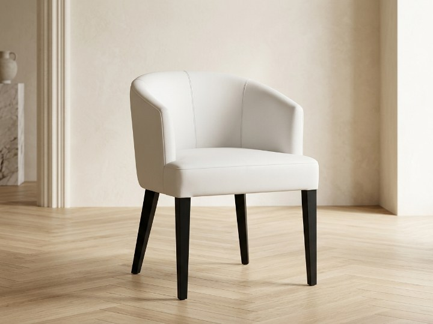
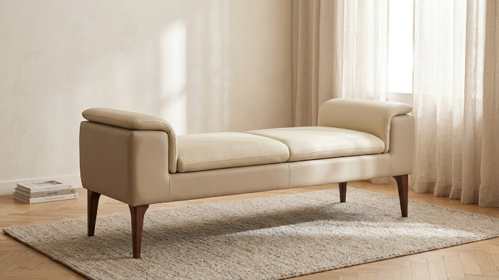
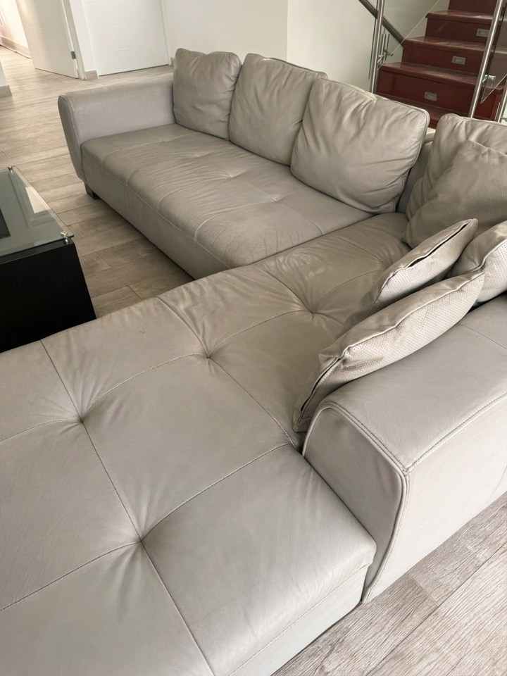
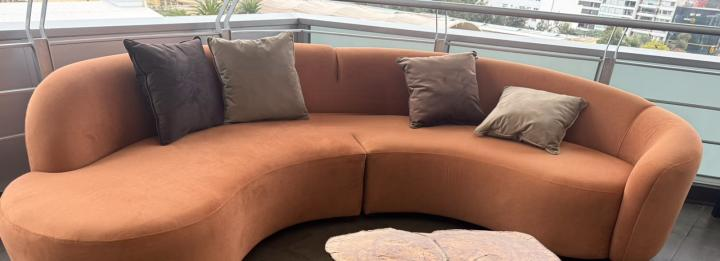
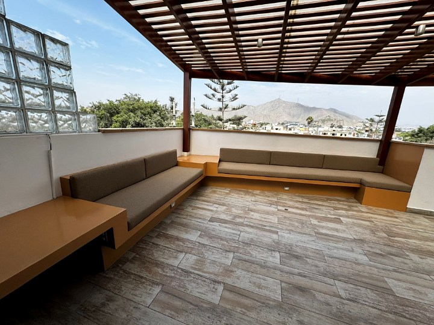
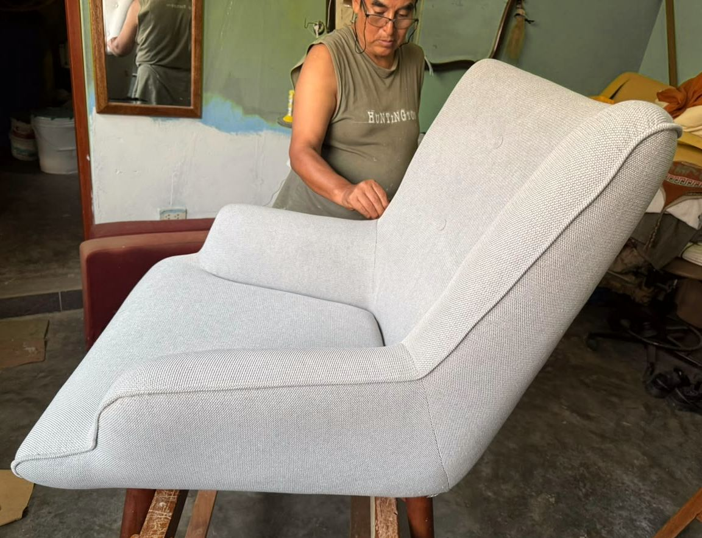
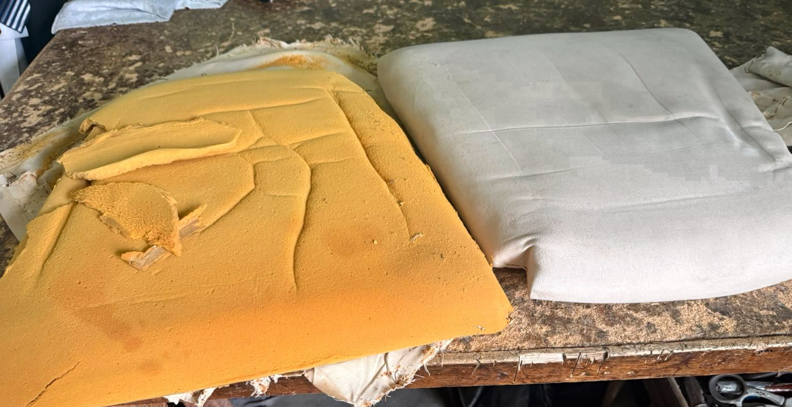

Maestro Rivera · 29 años de oficio
Tapicería de muebles en Lima.
Restauramos y tapizamos sofás, sillas y terrazas.
Ver trabajos realizados





Un oficio que se aprende con las manos.
Miraflores · Surco · San Isidro
Selección del taller
Nuestro trabajo.

Maestro Rivera · Lima
Hecho a mano.
Con paciencia.
29 años restaurando muebles con trato directo. Escuchamos lo que necesita, revisamos su mueble y le ayudamos a elegir cómo renovarlo.
Desde la primera conversación hasta la entrega, el trato es directo con el maestro tapicero.
Conversemos sobre su muebleEl interior
Por dentro,
también.
Estructura y relleno renovados. Lo que no se ve también se siente al sentarse.
- 01
Revisamos su mueble
Evaluamos qué se puede conservar y qué necesita renovarse.
- 02
Elegimos los materiales
Tela, textura y firmeza según el uso que le dará.
- 03
Trabajamos a medida
Ajustamos el relleno y cuidamos cada costura.

Una pausa para inspirarseExplorar la experiencia visual
Rivera Concierge · Otra perspectiva
Saltar recorridoOtra perspectiva. La misma esencia.
Rivera · Estudio 3D de formas y texturas
El oficio toma forma.

01 / La forma
Proporción serena.
Líneas simples que invitan a quedarse.
Lino claro
Empecemos por una foto
Su mueble aún
tiene historia.
Envíenos una foto por WhatsApp. Le orientamos sobre el tapizado y coordinamos los siguientes pasos.
Consultar por WhatsApp O llámenos al 997 317 630